Nacida en San José, Costa Rica, en 1989, Francyn Villegas McVane es el resultado de un linaje que desafió la historia. Su identidad fue forjada por la fuerza de su abuela, Consuelo Tadd Boins, y la visión de su padre, Santiago Felipe Villegas, quienes desde sus cuatro años le enseñaron que su herencia no provenía de la esclavitud, sino de reyes y reinas africanas. En un entorno que intentó doblegarla a través del racismo sistémico, Francyn creció con el ADN de las luchas sociales globales, desde el Apartheid hasta el legado de Nelson Mandela y Malcolm X. El Legado de Olga y la Lucha por la Identidad La historia de MLSC está profundamente marcada por la memoria de su tía, Olga McVane Tadd, quien a los 12 años perdió la batalla contra el bullying y el racismo institucional. Este dolor familiar encontró un eco doloroso en la realidad actual de las comunidades indígenas, donde la pérdida de identidad sigue provocando oleadas de suicidios entre los jóvenes, como lo documenta Tatiana Martínez de Acomuita. Así Francyn comprendió que la invisibilidad y la falta de una voz propia son las herramientas más destructivas de cualquier sistema. De la Invisibilidad a la Soberanía Tecnológica Tras enfrentar sus propias batallas de salud y discriminación, Francyn transformó su vulnerabilidad en visión. Al notar cómo las minorías son tratadas bajo un lente de "pobrecitos" o inferioridad, decidió que no pediría más permiso ni compasión. Si el sistema falla en proteger la verdad y la lengua de los dueños de la historia, la respuesta es clara: construir nuestro propio sistema. Historia de Conexión: El Nacimiento de MLSC McVane Language Service Center nace del dolor de la humanidad y la convicción de que nadie más debe sentirse invisible u olvidado. No somos solo una empresa de tecnología; somos un acto de reclamo de propiedad intelectual, cultural y lingüística. Nuestra misión es erradicar la "ayuda a cambio de imposición". Observamos cómo se imponen abecedarios y leyes románticas sobre comunidades que ya poseen una verdad rica y milenaria. MLSC surge para devolver la soberanía a través de la voz y la Inteligencia Artificial, permitiendo que las comunidades indígenas, y hablantes de mek a tell u something, pattua, mezkitu, garifuna se comuniquen y prosperen sin corromper su entorno ni distorsionar su identidad. Como hijos de la tierra y la creación, no buscamos integración en sistemas que nos excluyen; construimos una infraestructura donde la tecnología sirve a la tradición. En MLSC, no pedimos un lugar en la mesa; nosotros construimos la mesa.
Identidad Corporativa
¿Quiénes Somos?
Mc Vane Language Service Center (MLSC) es el único puente legal y lingüístico para los pueblos indígenas de Costa Rica y comunidades criollas.
¿Qué Hacemos?
Centro especializado en servicios de interpretación multilingüe que integra tecnología de Inteligencia Artificial propia para el cierre de brechas comunicativas. Nos especializamos en la traducción de lenguas globales, nativas y criollas, permitiendo el acceso de poblaciones vulnerables a servicios públicos y privados, mientras documentamos y preservamos el patrimonio lingüístico mediante modelos de procesamiento de lenguaje natural (NLP) e integración de tecnología avanzada para la comunicación en zonas de difícil acceso y generar empleo WFH en zonas lejanas.
¿Dónde Estamos?
Nacidos en Limón, Costa Rica, operando desde el corazón de los territorios ancestrales.
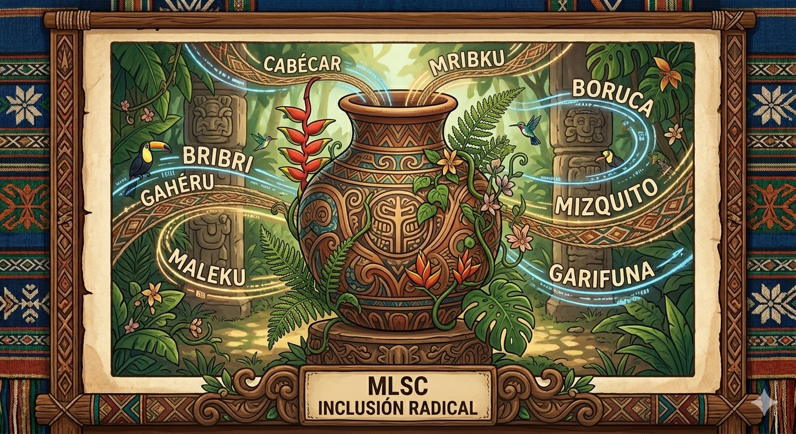

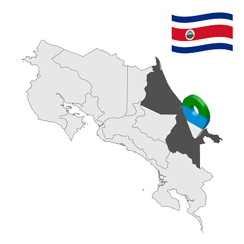
"Transformamos la barrera idiomática en eficiencia estatal."
Misión
Resolver las brechas de comunicación garantizando que todo usuario sea comprendido en su lengua materna.

Visión
Ser el referente mundial en inclusión lingüística radical sin limitaciones étnicas ni culturales.
Alcance Lingüístico
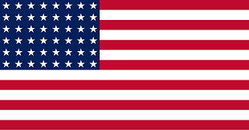
Inglés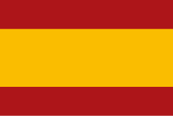
Español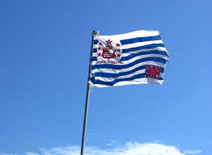
Miskito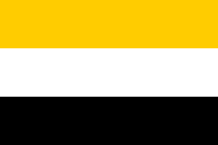
Garífuna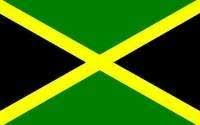
Mekatelyu BribriCabécarHuetarMaleku
BribriCabécarHuetarMaleku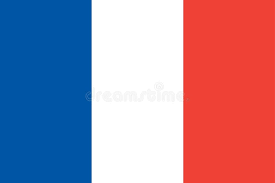
PattúaChorotega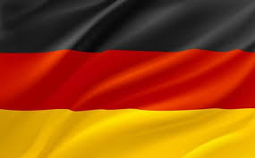
Alemán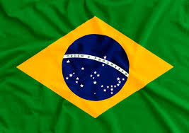
PortuguésNgabeBorucaTerraba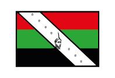
Yoruba"Nuestra IA es la vasija que guarda el patrimonio lingüístico."

Contexto Jurídico y Respaldo Legal
Problemáticas: Minorías Olvidadas

Suicidios por pérdida de identidad.
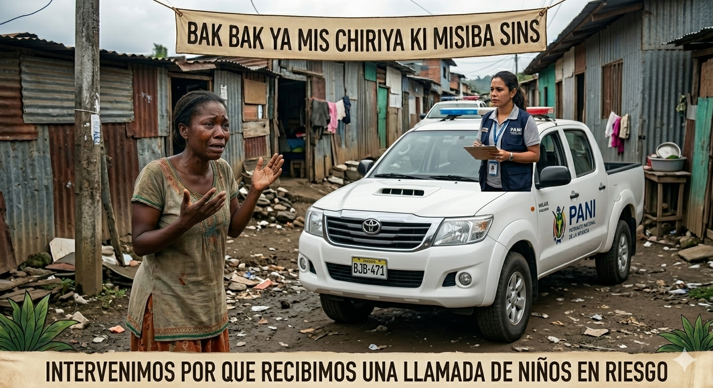
Exclusión en servicios críticos.

Migración forzada del territorio.
Impacto Social
Reducción de bonos estatales y del 60% en tiempos de atención estatal. Ademas de posicionar a Costa Rica como HUB de IA ética
Impacto Financiero y ESG
Generar empleo WFH para que no abandonen sus raices. Desarrolo de IA iclusivo de toda la comunidad. Filtros degobernanza cultural para no corromper el ecosistema cutural.Ahorro proyectado de ¢203M mensuales en la CCSS.
La Fundadora Francyn Mc Vane y Su Conexión con la Empresa
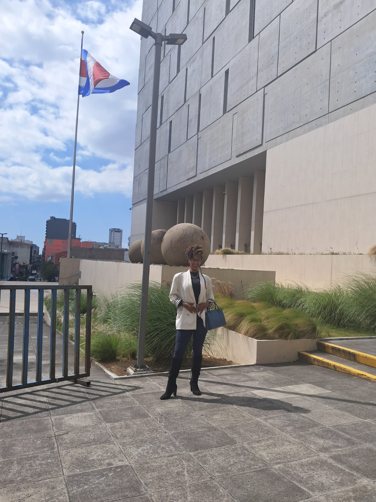
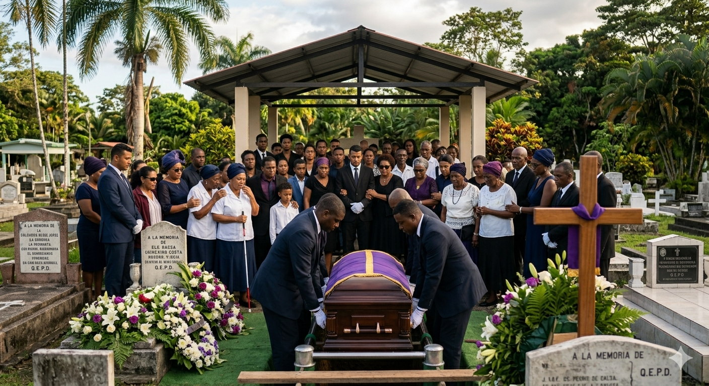
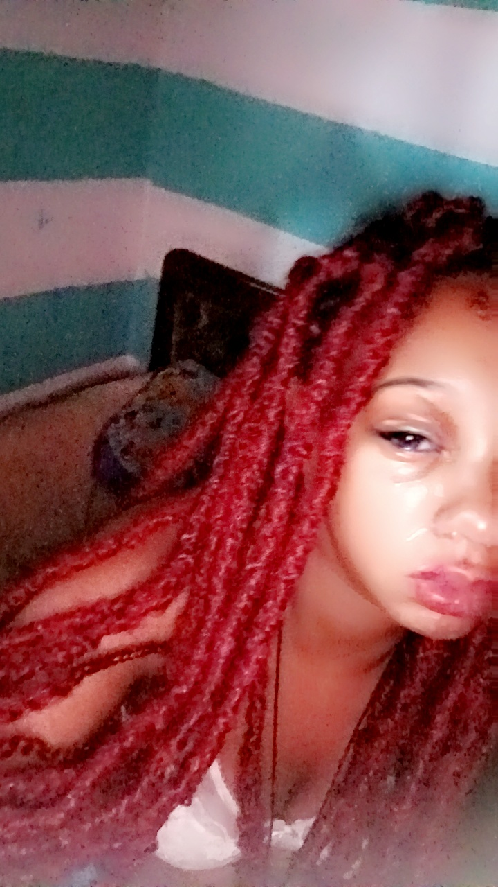
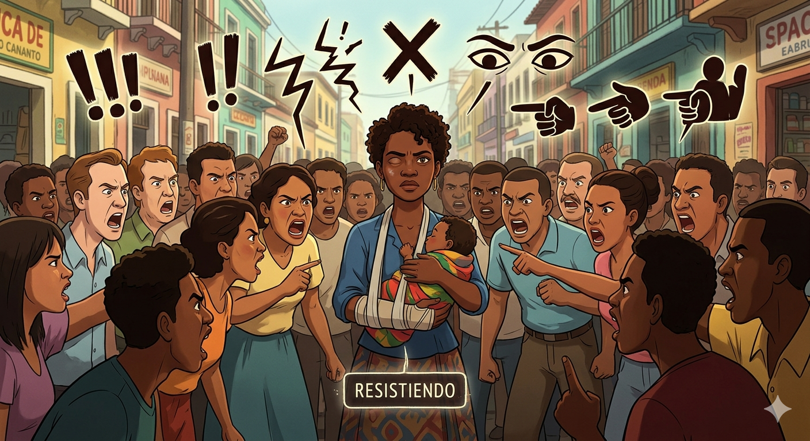
Inversores y Colaboradores
Si te interesa ser parte de este proyecto, ya sea como inversionista, impulsor de nuestra IA con identidad con tu lengua, o facilitador estratégicos para escalar la inclusión radical, contactanos.
"Únete a la revolución de la inclusión radical."